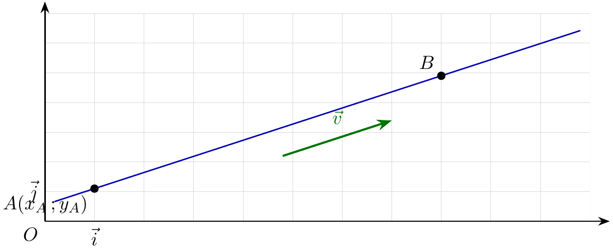
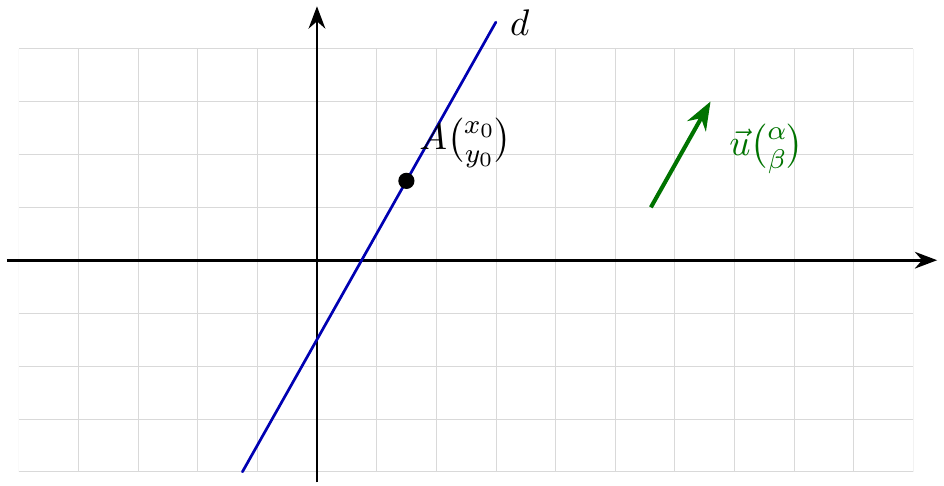
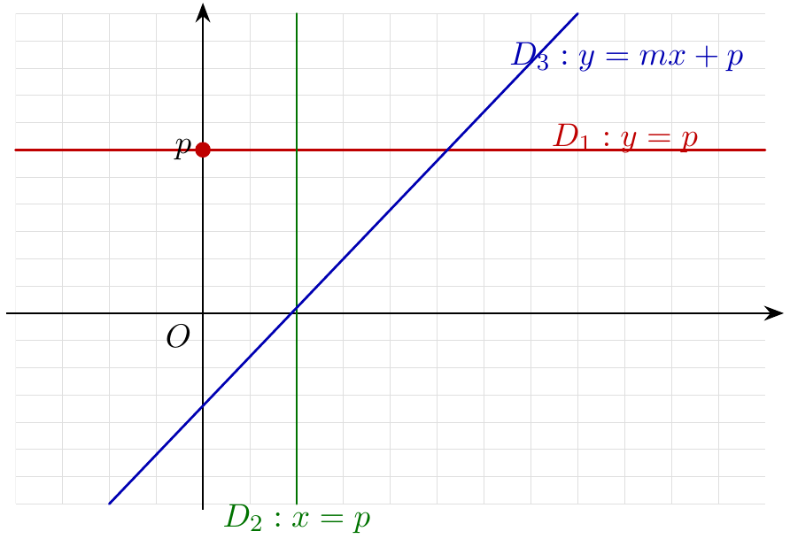
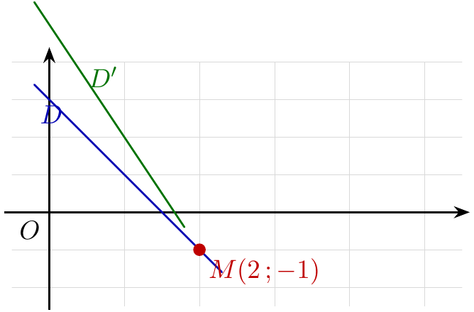

Chapitre 12 : Équation de droite cartésienne
Seconde · Chapitre 12 — Équation de droite cartésienne · cours de Frederik de Peyrelongue
I. Notion d'équation de droite
1.1 Définition d'une droite
Soient $A$ et $B$ deux points du plan : on appelle droite $(AB)$ l'ensemble des points $M$ du plan alignés avec les points $A$ et $B$.
On appelle vecteur directeur de la droite $(AB)$ tout vecteur $\vec{v}$ qui a la même direction que la droite $(AB)$.
Remarque : une droite admet une infinité de vecteurs directeurs. Ils sont tous colinéaires entre eux.

Soient $A$ un point et $\vec{u}$ un vecteur : l'ensemble des points $M$ du plan tels que les vecteurs $\AM$ et $\vec{u}$ soient colinéaires forme une droite passant par $A$ et de vecteur directeur $\vec{u}$.
Remarque : un point et un vecteur définissent une droite !
Deux vecteurs non nuls $\vec{u}$ et $\vec{v}$ sont colinéaires si et seulement si
Soient $A(2\,;-3)$ et $B(2\,;4)$ : trouver l'ensemble des points $M(x\,;y)$ alignés avec $A$ et $B$.
Correction : $M$ est aligné avec $A$ et $B$ si et seulement si $\AM$ et $\AB$ sont colinéaires.
$A$, $B$ et $M$ alignés $\iff \det\left(\AB\,;\AM\right)=0 \iff -7\,(x-2)+0\times(y+3)=0\iff -7(x-2)=0\iff x=2$.
Il y a équivalence entre « $M$ est aligné avec les points $A$ et $B$ » et « l'abscisse du point $M$ est égale à $2$ ».
Conclusion : l'ensemble des points $M$ d'abscisse $2$ sont alignés avec $A$ et $B$ et appartiennent donc à la droite $(AB)$. On dira que la droite $(AB)$ a pour équation $x=2$.
Remarque : cette droite est parallèle à l'axe des ordonnées.
II. Théorèmes
Soit $D$ une droite dans le plan muni d'un repère $(O\,;\vec{i}\,;\vec{j})$. On appelle équation cartésienne de la droite $(D)$ toute équation vérifiée par, et uniquement par, les coordonnées $(x\,;y)$ des points de la droite $(D)$.
Soit $(O\,;\vec{i}\,;\vec{j})$ un repère du plan : toute équation cartésienne de la forme
est une équation de droite.
Interprétation : tous les points $M$ du plan d'abscisse $x$ et d'ordonnée $y$ tels que $a\,y+b\,x+c=0$ appartiennent à la même droite.
Soit $D$ : $2y+x=2$.
Le point $A(0\,;1)$ appartient à $D$ car $2\times 1+0=2$.
Le point $B(0\,;2)$ n'appartient pas à $D$ car $2\times 2+0=4\neq 2$.
Preuve : soit un point $A$ du plan de coordonnées $A\left(x_{0}\,;y_{0}\right)$ et $\vec{u}\begin{pmatrix}\alpha\\ \beta\end{pmatrix}$ un vecteur du plan non nul (donc $(\alpha\,;\beta)\neq(0\,;0)$).
Le couple $\left(A\,;\vec{u}\right)$ définit une droite $D$ du plan.
Pour tout point $M$ de coordonnées $M(x\,;y)$, les vecteurs $\AM$ et $\vec{u}$ sont colinéaires. On aura donc $\det\left(\AM\,;\vec{u}\right)=0$.
Les coordonnées de $\AM$ sont $\AM\begin{pmatrix}x-x_{0}\\ y-y_{0}\end{pmatrix}$.
On développe l'expression obtenue :
Posons $a=-\alpha$, $b=\beta$ et $c=\alpha y_{0}-\beta x_{0}$ : on obtient
Tout point $M$ du plan de coordonnées $M(x\,;y)$ qui vérifie l'équation $a\,y+b\,x+c=0$ appartient à la droite $D$.

Soit $D$ une droite ayant pour équation cartésienne $a\,y+b\,x+c=0$ : alors le vecteur
est un vecteur directeur de la droite $D$.
2.1 Équation réduite de droite
Remarque : $a$ et $b$ ne peuvent pas être nuls en même temps.
1er cas : droite horizontale ($b=0$ et $a\neq 0$).
Le vecteur $\vec{u}\begin{pmatrix}-a\\ 0\end{pmatrix}$ est un vecteur directeur de la droite $D$ : il est horizontal, la droite $D$ est donc horizontale et elle a pour équation réduite
2e cas : droite verticale ($a=0$ et $b\neq 0$).
Le vecteur $\vec{u}\begin{pmatrix}0\\ b\end{pmatrix}$ est un vecteur directeur de la droite $D$ : il est vertical, la droite $D$ est donc verticale et elle a pour équation réduite
3e cas : ($a\neq 0$ et $b\neq 0$).
Le vecteur $\vec{u}\begin{pmatrix}-a\\ b\end{pmatrix}$ est un vecteur directeur de $D$ ; on obtient une équation dite réduite de $D$ :
- $m$ : nombre réel appelé coefficient directeur ;
- $p$ : nombre réel appelé ordonnée à l'origine.

Toute fonction affine a pour représentation graphique une droite.
III. Propriétés
3.1 Vecteur directeur d'une droite
- Toute droite $D$ non parallèle à l'axe des ordonnées admet une équation de la forme $y=m\,x+p$, et un vecteur directeur de $D$ est $\vec{u}(1\,;m)$.
- Toute droite parallèle à l'axe des ordonnées a pour équation $x=k$ et pour vecteur directeur $\vec{u}(0\,;1)$.
3.2 Droite parallèle
Deux droites sont parallèles si et seulement si leurs vecteurs directeurs sont colinéaires.
Deux droites $D$ et $D'$ ayant le même coefficient directeur $m$ sont parallèles.
Preuve : $D$ a pour équation $y=m\,x+p$ et $D'$ a pour équation $y=m\,x+p'$ : elles ont donc même vecteur directeur $\vec{u}(1\,;m)$. Les deux vecteurs sont donc colinéaires et les droites parallèles.
3.3 Droites sécantes
Deux droites $D$ et $D'$ ayant des coefficients directeurs différents sont sécantes.
IV. Application : fonction affine
Les fonctions définies sur $\R$ dont l'expression est de la forme $f(x)=a\,x+b$, avec $a$ et $b$ deux nombres réels, sont appelées fonctions affines.
La courbe représentative de la fonction $f$ est l'ensemble des points du plan $M\left(x\,;y=a\,x+b\right)$.
La représentation graphique d'une fonction affine est une droite.
Preuve : $y=a\,x+b$ est l'équation réduite d'une droite.
V. Résolution de système d'équations à deux inconnues
5.1 Système linéaire de deux équations à deux inconnues
On appelle $S$ un système linéaire de deux équations à deux inconnues :
Une solution du système $(S)$ est un couple vérifiant à la fois les deux équations de $(S)$.
Résoudre le système $(S)$, c'est trouver toutes les solutions.
Soit
$S_{1}$ est un système linéaire de deux équations à deux inconnues. Chaque équation peut être interprétée comme une droite.
5.2 Résolution graphique d'un système
Pour résoudre graphiquement le système $(S)$, il faut tracer la droite $D$ d'équation $a\,y+b\,x=c$ et la droite $D'$ d'équation $a'\,y+b'\,x=c'$, puis il y a $3$ cas :
1er cas : $D$ et $D'$ sont sécantes en un point $M\left(x_{0}\,;y_{0}\right)$.
Le système admet une unique solution qui est $\left(x_{0}\,;y_{0}\right)$. On note l'ensemble des solutions $S=\left\{\left(x_{0}\,;y_{0}\right)\right\}$.
2e cas : les droites $D$ et $D'$ sont parallèles et non confondues.
Le système $(S)$ n'a aucune solution. On note l'ensemble des solutions $S=\varnothing$.
3e cas : les droites $D$ et $D'$ sont confondues.
Le système $(S)$ a une infinité de solutions : tous les couples de coordonnées des points de la droite $D$.
On note l'ensemble des solutions $S=\left\{(x\,;y)\,;a\,y+b\,x=c\right\}$.
On trace la droite $D$ d'équation $y=-2x+3$ et la droite $D'$ d'équation $y=-3x+5$.
L'unique solution est le point d'intersection des deux droites : $M(2\,;-1)$, donc $S=\{(2\,;-1)\}$.

5.3 Résolution algébrique d'un système
On dispose de deux méthodes pour résoudre algébriquement un système linéaire à deux inconnues : la méthode par substitution et la méthode par combinaison.
On peut avoir une préférence, mais il est cependant intéressant de connaître les deux méthodes : c'est pourquoi certains exercices sont corrigés avec une méthode, et d'autres avec l'autre méthode.
A. Méthode par substitution
Dans la méthode par substitution, on exprime une des inconnues en fonction de l'autre en se servant de l'une des équations, et on remplace cette inconnue par l'expression trouvée dans l'autre équation : le but est d'obtenir une équation dans laquelle ne figure plus qu'une seule inconnue.
On substitue $y$ dans la deuxième équation :
On substitue $x$ dans la première équation :
On retrouve bien la même solution : $S=\{(2\,;-1)\}$.
B. Méthode par combinaison
Dans la méthode par combinaison, on multiplie les deux membres de chaque équation par des nombres choisis de telle sorte que les coefficients de l'une des inconnues soient opposés : il ne reste plus qu'à ajouter les équations membre à membre pour obtenir une équation dans laquelle ne figure plus qu'une seule inconnue.
On additionne les deux équations membre à membre :
On trouve l'ensemble des solutions $S=\{(2\,;-1)\}$.